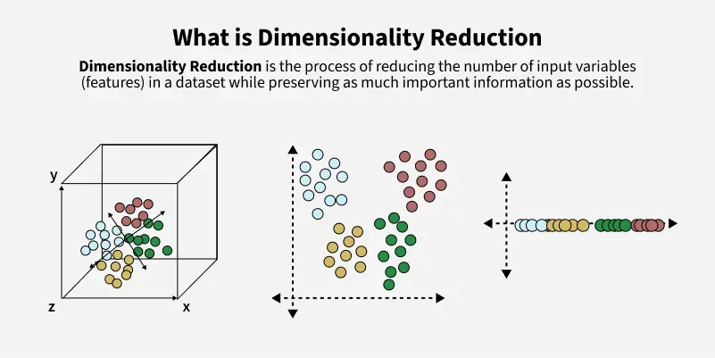
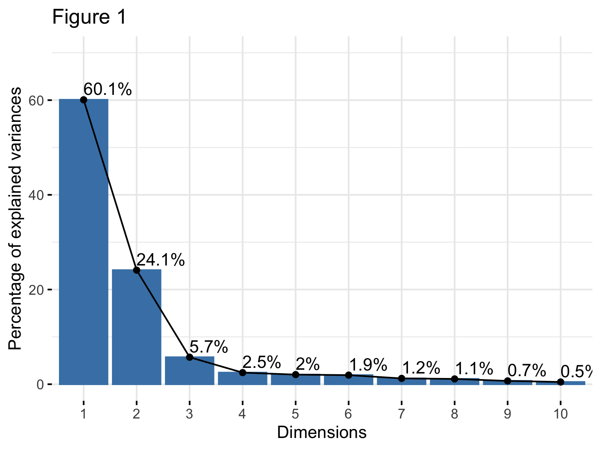
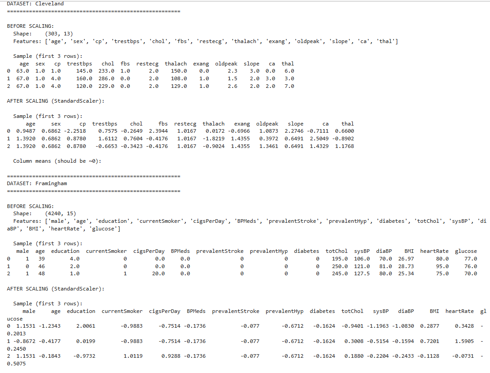
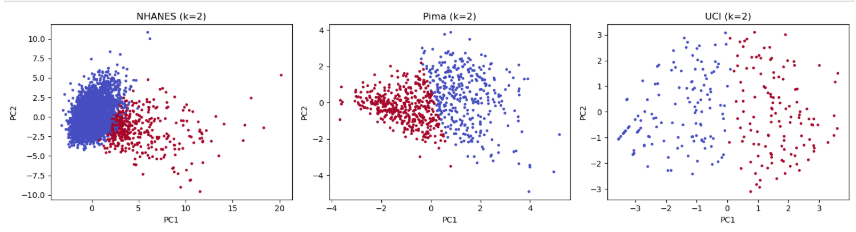
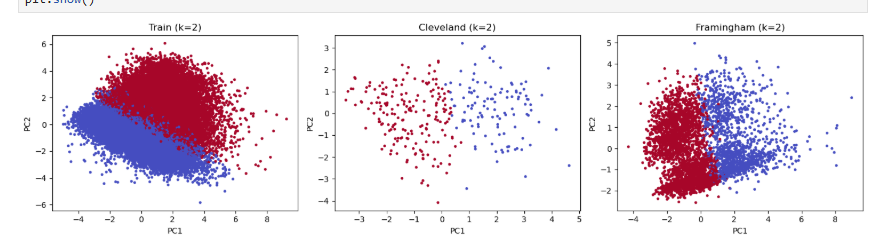
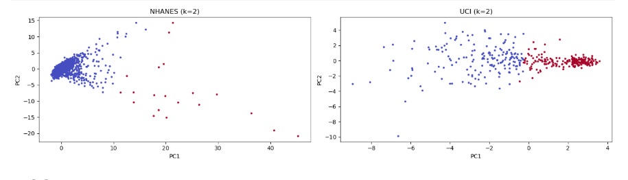
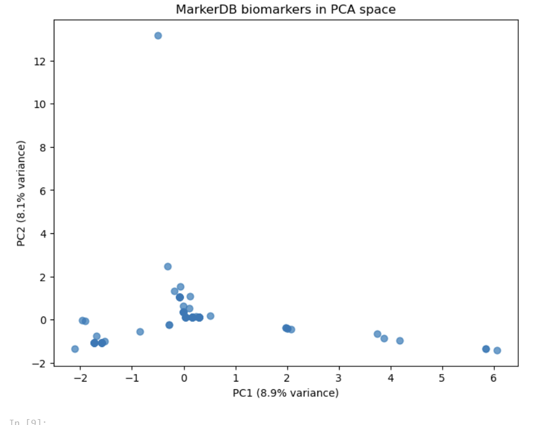

Principal Component Analysis
(a) Overview
Principal Component Analysis (PCA) is a vital technique that reduces the number of variables while still capturing most of the variance within a dataset. The reduced number of variables are called principal components, which act as new axes along which the data exhibits the greatest variance. This effectively reduces the complexity of the data while still retaining the most important information. During PCA, the covariance matrix of the dataset is computed to measure the relationships between variables. PCA then calculates the eigenvectors and eigenvalues of this covariance matrix. The eigenvectors represent the directions of maximum variance in the data, while the eigenvalues indicate how much variance is captured along each eigenvector. A larger eigenvalue means that the corresponding eigenvector captures a greater amount of the dataset's information.
In datasets with many features, analysis can become overwhelmed with noise, redundancy, and irrelevant information. As the number of dimensions increases, data points become more sparse, making patterns more difficult to identify and interpret. In some machine learning models, a large number of features can also lead to overfitting, where the model learns noise rather than meaningful relationships within the data. Additionally, high-dimensional datasets often require greater computational resources for storage and processing.
For visual analysis specifically, it is challenging to plot and interpret data with many dimensions because humans can only directly visualize data in two or three dimensions. PCA addresses this issue by projecting the data into a lower-dimensional space while preserving as much variance as possible. This allows the data to be condensed into a much lower-dimensional representation, enabling simpler and more effective visualizations while still maintaining the key patterns and relationships present in the original dataset.
Overview Images

Figure 1. "Dimensionality Reduction Techniques - GeeksforGeeks"

Figure 2. "Scree Plot for PCA Explained - Statistics Globe"
(b) Data Preparation
Data preparation was just as important for PCA as it was for the earlier methods. PCA can only work with data that is purely numerical, since the method relies on calculating a covariance matrix and finding the directions of greatest variance. Because of this, any categorical variables, such as the yes/no symptom responses in the diabetes and kidney datasets, had to be converted into numbers before PCA could be applied. Any identifier columns and diagnosis labels were also removed, since PCA is an unsupervised method and should describe the natural variation in the biomarker measurements themselves rather than be guided by an outcome we already know.
One of the most important steps was standardizing the data. PCA is very sensitive to the scale of each variable, so a biomarker measured in large units (such as glucose in the hundreds) would otherwise dominate the components simply because of its size, not because it carries more meaningful information. By standardizing every feature to have a mean of zero and a standard deviation of one, each biomarker is given a fair chance to contribute, and the resulting components reflect real biological variation rather than differences in measurement units. After cleaning, encoding, and standardizing each dataset, the data was in exactly the numeric, unlabeled, scaled format that PCA requires. This is also why the same prepared data could feed both the clustering and PCA analyses.
PCA Dataset

Cleaned Data Files Used for PCA
Cardiovascular: cardio_train_cleaned.csv | framingham_cleaned.csv | cleveland_cleaned.csv
Diabetes: diabetes_cleaned.csv | nhanes_diabetes_cleaned.csv | diabetes_uci_cleaned.csv
Kidney: kidney_cleaned.csv | nhanes_kidney_cleaned.csv
MarkerDB: cleaned_markerdb_api.csv
{kind=link}
Sample of the cardio training dataset after data prepping for PCA
(c) Code
The code for PCA was written in Python using scikit-learn. For each dataset, the standardized biomarker data was passed into PCA, and the explained variance ratio, eigenvalues, and eigenvectors (loadings) were printed so the amount of information each component captured was visible and which biomarkers drove each axis. The data was then projected onto its first two principal components and plotted so the structure could be viewed in two dimensions.
Links to the complete code and notebooks are below.
(d) Results
For each dataset, the first principal component (PC1) represents the single direction along which the biomarker data varies the most, and the second component (PC2) captures the next largest amount of variation that is independent of the first. The way to understand what each component actually means is to look at its loadings, which show how strongly each biomarker contributes to that axis. Biomarkers with large loadings of the same sign tend to rise and fall together, while biomarkers with opposite signs are being contrasted against one another. The table below shows how much of the total variance the first two components captured for each dataset.
| Dataset | PC1 Variance | PC2 Variance | Cumulative (PC1 + PC2) |
|---|---|---|---|
| Diabetes – Pima | 30% | 19% | 49% |
| Diabetes – UCI | 21% | 13% | 34% |
| Cardiovascular – Cardio Train | 20% | 17% | 37% |
| Cardiovascular – Cleveland | 24% | 12% | 36% |
| Cardiovascular – Framingham | 21% | 12% | 34% |
| Kidney – NHANES | 27% | 15% | 41% |
| Kidney – UCI | 29% | 8% | 37% |
| MarkerDB | 8.9% | 8.1% | 17% |
Diabetes Datasets

Figure 4. PCA projections of the diabetes datasets onto their first two principal components.
For the diabetes data, PC1 acts as an overall metabolic severity axis. The biomarkers most associated with diabetes, such as glucose, insulin, and BMI, all load strongly and in the same direction on PC1, which means that moving along this axis corresponds to moving from a healthier metabolic profile toward a more diabetic one. PC2 captured a different kind of variation, separating things like age and pregnancies from body composition rather than overall sugar levels. In the symptom-based UCI dataset, PC1 reflected the overall number of classic diabetes symptoms a person reported, while PC2 contrasted skin and appearance related symptoms against the more acute thirst and urination symptoms. This tells us that the strongest single pattern in the diabetes data really is the metabolic gradient we expected.
Cardiovascular Datasets

Figure 5. PCA projections of the cardiovascular datasets onto their first two principal components.
The cardiovascular datasets were especially interesting because their main axis of variation depended on what each dataset measured. In the Framingham data, PC1 was clearly a blood pressure and hypertension axis, with systolic blood pressure, diastolic blood pressure, and a diagnosis of hypertension all loading heavily together, while PC2 was driven almost entirely by smoking behavior. In the Cleveland data, PC1 reflected cardiac stress, combining exercise-related measures like ST depression and exercise-induced angina with a lower maximum heart rate. In the Cardio Train data, however, PC1 leaned more toward body size and sex than disease, which showed that the strongest source of variation there was simply how people were built rather than their cardiovascular risk. This was a useful reminder that PCA reflects whatever a dataset measures most strongly, which is not always the outcome we care about.
Kidney Datasets

Figure 6. PCA projections of the kidney datasets onto their first two principal components.
The kidney data produced the cleanest and most relevant result for this project. In the NHANES kidney dataset, PC1 was almost entirely a kidney function axis, with the albumin-to-creatinine ratio, urine albumin, serum creatinine, and blood urea nitrogen all loading strongly on the same component. These are exactly the markers clinicians use to measure declining kidney function, so PC1 essentially traces the path from healthy kidneys toward chronic kidney disease. In the UCI kidney dataset, PC1 separated healthy blood measurements from disease-related markers like hypertension and diabetes, and notably PC2 was tied to blood sugar, which links kidney disease back to diabetes within the same dataset.
MarkerDB Biomarkers

Figure 7. PCA projection of the MarkerDB biomarkers based on their condition associations.
The MarkerDB data behaved very differently from the patient datasets. Here, the first two components only captured about 9% of the variance each, which is very low. This happened because each biomarker is linked to only a small handful of conditions, so the data is sparse and spread across many dimensions with no single dominant pattern. Most biomarkers clustered near the center of the plot, while a few distinctive ones, such as glucose, potassium, and several hormones, stretched out along the edges. Even though the variance captured was small, this still told us something meaningful, which is that biomarker overlap between conditions is the exception rather than the rule.
(e) Conclusions
PCA gave a clearer picture of what actually drives the variation in the biomarker data for diabetes, cardiovascular disease, and chronic kidney disease. One pattern that stood out across nearly every dataset was that the variance was spread thin, with the first component usually capturing only around twenty to thirty percent of the information and the MarkerDB data capturing far less. This reinforced something also found during clustering, which is that these diseases do not come down to one single factor. Instead, they are shaped by many overlapping measurements, which fits the idea that conditions like diabetes, kidney disease, and cardiovascular disease exist along a continuous spectrum rather than as cleanly separated states.
The most important finding for the topic came from the kidney data, where the first principal component lined up almost perfectly with the core markers of kidney function. This matters because the same kidney markers that define this axis, such as creatinine and the albumin-to-creatinine ratio, are also tied to cardiovascular risk, and the kidney symptom data connected directly back to diabetes through blood sugar. Seeing kidney function emerge so clearly as a main axis of variation supports the idea that chronic kidney disease sits in the middle of the relationship between diabetes and cardiovascular disease. PCA also reinforced the clustering results, since the same axes that defined the components, like blood pressure, blood sugar, and kidney function, were the same patterns that separated the groups earlier. Overall, PCA helped confirm which biomarkers carry the most information and pointed toward kidney function as a meaningful link between the three conditions.